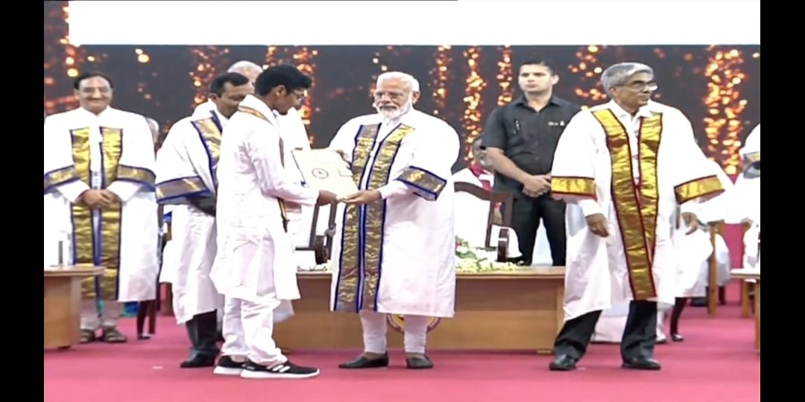
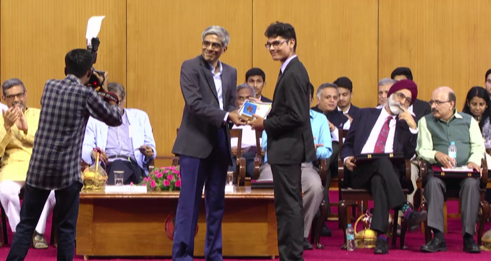
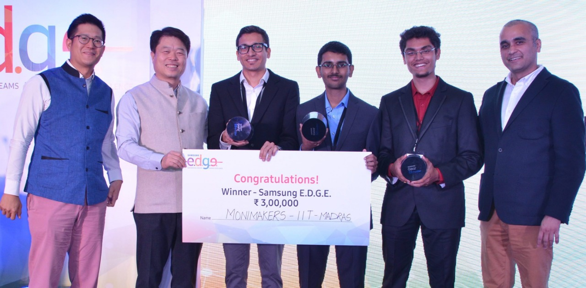

The Shankar Dayal Sharma prize is awarded by the Prime Minister of India to the best student from the graduating 2019 B.Tech. batch (400+ students) with all-round proficiency in sports, leadership, curricular & extracurricular activities. IIT Madras conducts a rigorous application and verification process for applicants every year.
The Institute Blues awards are given to the best graduating students across all IIT-Madras programmes (2000+ students) annually for exceptional achievements in academics, sports, literary, organizational and co-curricular activities. The award has notoriously high standards - gold was never awarded during my time in college, and silver & bronze were only given to 1-2 students.
300+ teams from IITs & IIMs all over India participate in this pan-India technology case study competition. All the other national finalists were MBA students from India's top universities, and it was a moment of surprise and pride for us that we won, despite being undergraduates with no business background. The Dean of IIT-Madras also honoured us with the "Celebrating Success" award for our victory.